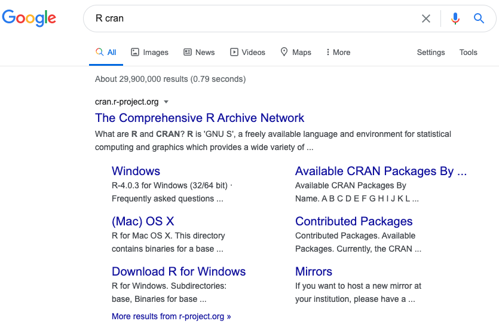
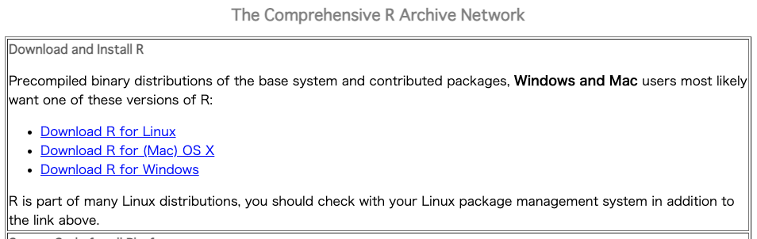
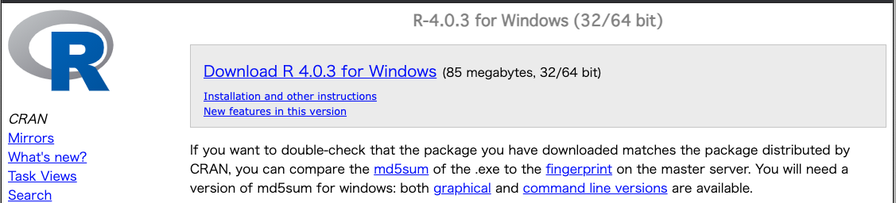
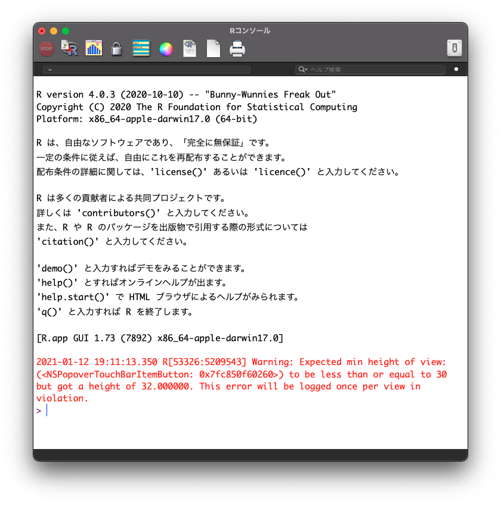
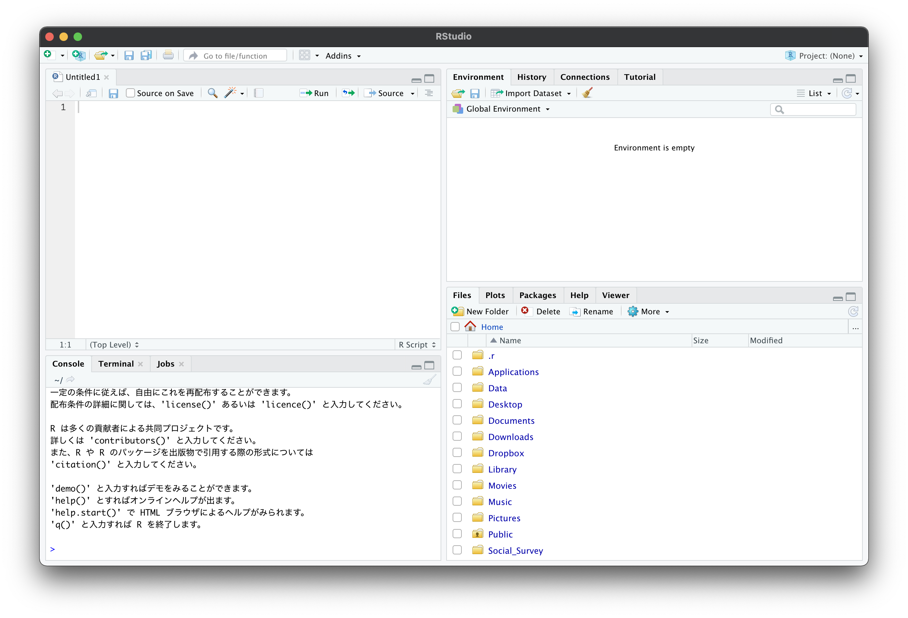
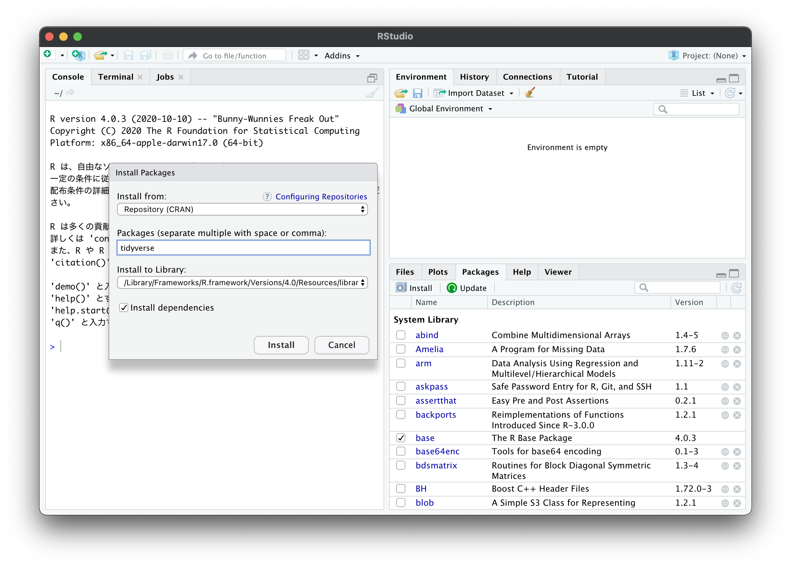

2 RとRStudioのインストール
2.1 Rのインストール

2.1.1 ダウンロード
- Macの場合は
Download R for (Mac) OS Xをクリックし，一番上にあるR-4.0.3.pkg (notarized and signed)をクリックしR-4.0.3.pkgをダウンロードする． - Windowsの場合は
Download R for Windowsをクリックし，一番上のbaseをクリックし，次の画面のDownload R 4.0.3 for Windows (85 megabytes, 32/64 bit)をクリックしてR-4.0.3-win.exeをダウンロードする． - ダウンロードされたらファイルを実行してインストールする．
- 基本的には「OK」と「次へ」を選択する．ただしWindowsの場合，インストール先は日本語が含まれないようなフォルダやOnedrive等以外の場所に設定して下さい．

2.1.2 MAC

2.1.3 Windows

2.1.4 Rの起動
- Rがインストールされたら次のような画面（コンソール）がでてくる．
- 赤字は無視して下さい．

2.1.5 Rのテスト
- Rコンソール上に，直接入力してテストしましょう．
>の後に1+2と入力して，Return（Enter）を押してください．
1 + 2## [1] 3- ここまでできればRのテストは完了です．
- 次にRStudioのダウンロードを行います．
2.2 RStudioのインストール
2.2.1 RStudioのダウンロード
- RStudio DesktopのFreeを探して，DOWNLOADする．
- https://rstudio.com/products/rstudio/download/#download
- MACの場合は
RStudio-1.3.1093.dmg - Windowsの場合は
RStudio-1.3.1093.exe
2.2.2 RStudioの起動
- RStudioを起動する．
- Windowsの場合は右クリックで，「管理者として実行」とする．
- 次のような画面がでればOK．
- 左下のコンソール上に
1+2などと入力し，テストしてみましょう．

2.3 他の参考になるサイト
2.4 パッケージのインストール
- 右下の画面のPackagesを選択
- すぐ左下のInstallを選択する
- 新たに表示された画面のPackages (separate multiple with space or comma):の部分に
tidyverseと入力

2.5 パッケージの呼び出し
- コンソール上に
library(tidyverse)と入力し，実行してみましょう． - 以下の様な表示が出ればうまくいっています．
library(tidyverse)## ─ Attaching packages ──────────────────── tidyverse 1.3.1 ─## ✓ tibble 3.1.4 ✓ dplyr 1.0.7
## ✓ tidyr 1.1.3 ✓ stringr 1.4.0
## ✓ readr 2.0.1 ✓ forcats 0.5.1
## ✓ purrr 0.3.4## ─ Conflicts ───────────────────── tidyverse_conflicts() ─
## x dplyr::filter() masks stats::filter()
## x dplyr::lag() masks stats::lag()2.6 パッケージインストールの際のトラブル
- よくあるエラーについては以下の麦山さんのサイトが参考になります．
エラー: package or namespace load failed for ‘tidyverse’ in loadNamespace(i, c(lib.loc, .libPaths()), versionCheck = vI[[i]]):
- 古いバージョンのRやRStudioがインストールされている可能性があります．
R.Version()とコンソールに入力したときに，下の方にR version 4.0.3 (2020-10-10)と表示されるか確認してみましょう．
OneDrive/????/ といったようなエラーがでる．
- RStudioをOnedriveからアンインストールした上で，別の場所にインストールしてみましょう．日本語の名前ではない場所がよいです．
- RStudioを開く際に右クリックで「管理者として実行」などすればうまくいくかもしれません．
どうしてもうまくいかない
- RStudio Cloudを使用するのを推奨することを推奨します．
- Gmailのアカウントを用いてサインインもできます．
- Zipで圧縮してあるファイルはそのままUploadすれば読み込めます．
- https://rstudio.cloud/